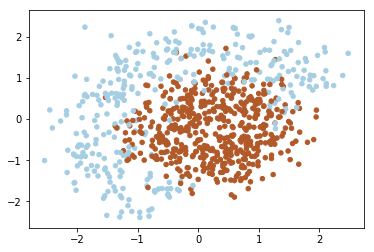
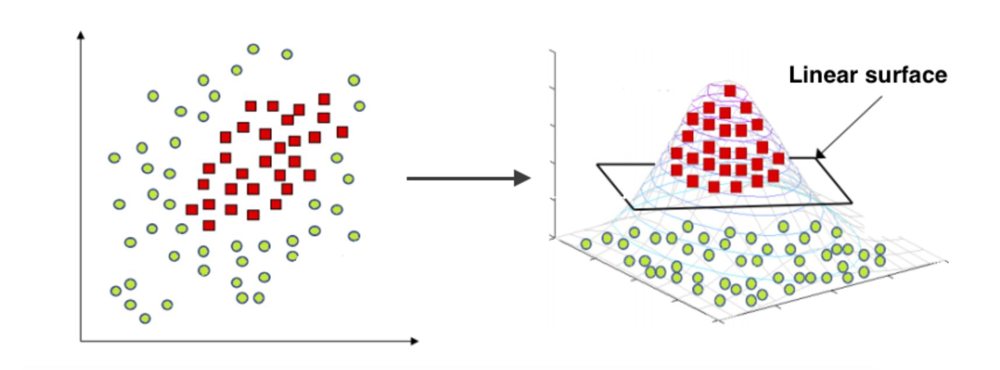
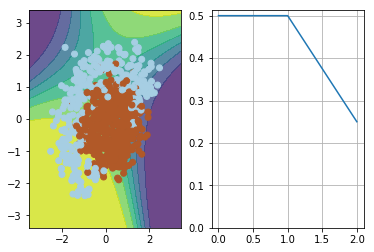
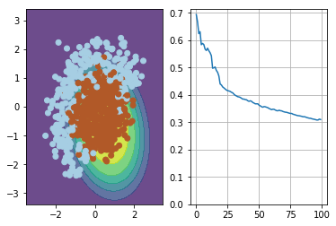
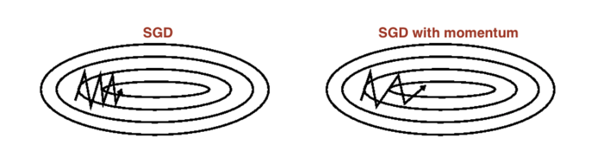
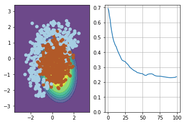
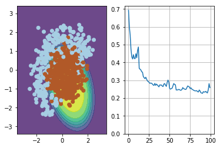

Programming assignment (Linear models, Optimization)
In this programming assignment you will implement a linear classifier and train it using stochastic gradient descent modifications and numpy.
1 | import numpy as np |
1 | import sys |
1 | # token expires every 30 min |
Two-dimensional classification
To make things more intuitive, let’s solve a 2D classification problem with synthetic data.
1 | with open('train.npy', 'rb') as fin: |

Task
Features
As you can notice the data above isn’t linearly separable. Since that we should add features (or use non-linear model). Note that decision line between two classes have form of circle, since that we can add quadratic features to make the problem linearly separable. The idea under this displayed on image below:

1 | print(X) |
[[ 1.20798057 0.0844994 ]
[ 0.76121787 0.72510869]
[ 0.55256189 0.51937292]
...,
[-1.22224754 0.45743421]
[ 0.43973452 -1.47275142]
[ 1.4928118 1.15683375]]
1 | def expand(X): |
1 | X_expanded = expand(X) |
1 | X_expanded |
array([[ 1.20798057, 0.0844994 , 1.45921706, 0.00714015, 0.10207364,
1. ],
[ 0.76121787, 0.72510869, 0.57945265, 0.52578261, 0.5519657 ,
1. ],
[ 0.55256189, 0.51937292, 0.30532464, 0.26974823, 0.28698568,
1. ],
...,
[-1.22224754, 0.45743421, 1.49388906, 0.20924606, -0.55909785,
1. ],
[ 0.43973452, -1.47275142, 0.19336645, 2.16899674, -0.64761963,
1. ],
[ 1.4928118 , 1.15683375, 2.22848708, 1.33826433, 1.72693508,
1. ]])
Here are some tests for your implementation of expand function.
1 | # simple test on random numbers |
Seems legit!
Logistic regression
To classify objects we will obtain probability of object belongs to class ‘1’. To predict probability we will use output of linear model and logistic function:
1 | def probability(X, w): |
1 | dummy_weights = np.linspace(-1, 1, 6) |
1 | ## GRADED PART, DO NOT CHANGE! |
1 | # you can make submission with answers so far to check yourself at this stage |
Submitted to Coursera platform. See results on assignment page!
In logistic regression the optimal parameters $w$ are found by cross-entropy minimization:
Loss for one sample:
Loss for many samples:
1 | def compute_loss(X, y, w): |
1 | # use output of this cell to fill answer field |
1 | ## GRADED PART, DO NOT CHANGE! |
1 | # you can make submission with answers so far to check yourself at this stage |
Submitted to Coursera platform. See results on assignment page!
Since we train our model with gradient descent, we should compute gradients.
To be specific, we need a derivative of loss function over each weight [6 of them].
We won’t be giving you the exact formula this time — instead, try figuring out a derivative with pen and paper.
As usual, we’ve made a small test for you, but if you need more, feel free to check your math against finite differences (estimate how $L$ changes if you shift $w$ by $10^{-5}$ or so).
1 | def compute_grad(X, y, w): |
1 | # use output of this cell to fill answer field |
1 | ## GRADED PART, DO NOT CHANGE! |
1 | # you can make submission with answers so far to check yourself at this stage |
Submitted to Coursera platform. See results on assignment page!
Here’s an auxiliary function that visualizes the predictions:
1 | from IPython import display |
1 | visualize(X, y, dummy_weights, [0.5, 0.5, 0.25]) |

Training
In this section we’ll use the functions you wrote to train our classifier using stochastic gradient descent.
You can try change hyperparameters like batch size, learning rate and so on to find the best one, but use our hyperparameters when fill answers.
Mini-batch SGD
Stochastic gradient descent just takes a random batch of $m$ samples on each iteration, calculates a gradient of the loss on it and makes a step:
1 | # please use np.random.seed(42), eta=0.1, n_iter=100 and batch_size=4 for deterministic results |

<matplotlib.figure.Figure at 0x7fdbbfafb908>
1 | # use output of this cell to fill answer field |
1 | ## GRADED PART, DO NOT CHANGE! |
1 | # you can make submission with answers so far to check yourself at this stage |
Submitted to Coursera platform. See results on assignment page!
SGD with momentum
Momentum is a method that helps accelerate SGD in the relevant direction and dampens oscillations as can be seen in image below. It does this by adding a fraction $\alpha$ of the update vector of the past time step to the current update vector.

1 | # please use np.random.seed(42), eta=0.05, alpha=0.9, n_iter=100 and batch_size=4 for deterministic results |

<matplotlib.figure.Figure at 0x7fdbba216e10>
1 | # use output of this cell to fill answer field |
1 | ## GRADED PART, DO NOT CHANGE! |
1 | # you can make submission with answers so far to check yourself at this stage |
Submitted to Coursera platform. See results on assignment page!
RMSprop
Implement RMSPROP algorithm, which use squared gradients to adjust learning rate:
1 | # please use np.random.seed(42), eta=0.1, alpha=0.9, n_iter=100 and batch_size=4 for deterministic results |

<matplotlib.figure.Figure at 0x7fdbba944f98>
1 | # use output of this cell to fill answer field |
1 | ## GRADED PART, DO NOT CHANGE! |
1 | grader.submit(COURSERA_EMAIL, COURSERA_TOKEN) |
Submitted to Coursera platform. See results on assignment page!